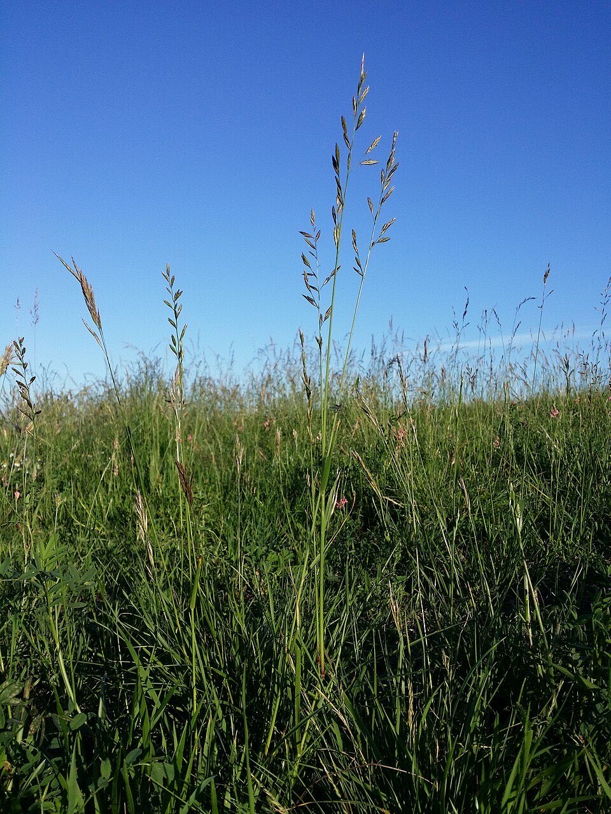
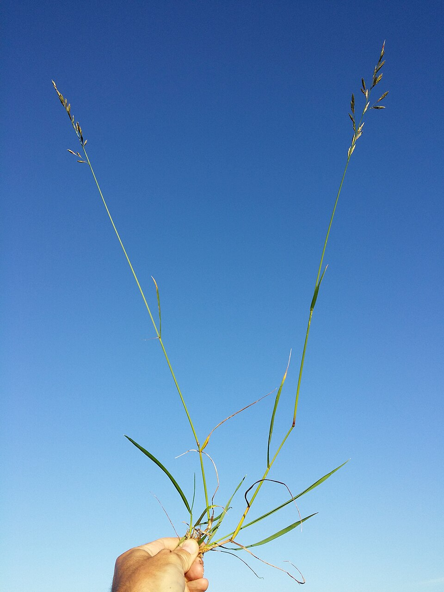

Meadow Fescue
Schedonorus pratensis, Festuca pratensis (older name)


- Also called
- Meadow rye grass
- Kind
- grass · Poaceae
- Native to Vermont
- no
- Legal status
- Not on the Agency of Agriculture quarantine list (effective 2026-06-16; read 2026-10-30). (checked 2026-10-30)
- Look-alikes
- Tall fescue; Red fescue; Perennial ryegrass
Names
Meadow fescue, Schedonorus pratensis, a grass in the family Poaceae. Go Botany lists it as meadow rye grass.
Range and habitat
Not native. Go Botany says it is introduced and has become naturalized in places, in disturbed or maintained ground, meadows and fields, roadsides and lawns; it is present in Vermont. County-level distribution is not stated in the text read.
How to identify (by season; look-alikes and the key difference)
- Growth habit (UVM): a tall bunchgrass, similar to tall fescue but slightly shorter. Leaves are coarse, medium to wide, medium green, with "corduroy" deep parallel grooves. Rolled bud shoot. Go Botany adds prominent basal tufts and stems that trail at the base and turn upward.
- Collar: a short auricle without hairs (smooth) and a short, blunt (truncate) ligule (UVM); the ligule is 0 to 0.5 mm (Go Botany).
- Sheaths: closed around the stem, reddish brown, shredding on older leaves.
- Seedhead: an open panicle 60 to 250 mm long, with 1 to 9 spikelets per branch, each 8.5 to 17 mm long. The spikelets are essentially awnless.
- Leaf: blades 2 to 7 mm wide and 10 to 25 cm long.
- Height: 30 to 130 cm.
- Key difference from tall fescue: hairless auricles, a shorter plant, and (UVM) more palatable. Red fescue has no auricles (Go Botany, Red Fescue).
Role in the field
UVM says it is more palatable than tall fescue. Nothing else about its role was found in the sources read.
What helps it thrive (light, soil and moisture, and how it is kept)
- Light: grows best with full sunlight (a vegetation management guide cited in the FEIS review).
- Soil and water: the review says it is not clear what soil characteristics it prefers; it tolerates acid soils and a wide range of soil moisture.
- Keeping it: seedlings establish slowly but persist once established; cutting and intensive grazing stimulate growth and spread; it withstands trampling; it does not form a persistent seed bank, and fire is not an effective control.
- Use to others: likely forage for ungulates; a year-round food of eastern cottontails in Missouri.
Managing for it and living with it
The sources read give no management advice for meadow fescue.
Legal status
Not on the Agency of Agriculture quarantine list as read on 2026-10-30. No other legal status was looked up.
Sources
- University of Vermont Extension, Characteristics of Forage and Pasture Grasses Found in the Northeast U.S., Sid Bosworth, Extension Forage Agronomist, January 2014 (a 4-page table): https://www.uvm.edu/d10-files/documents/2024-10/Forage_Grass_Characteristics_ID_NE_2014.pdf (read as text 2026-10-30)
- Native Plant Trust, Go Botany, Schedonorus pratensis: https://gobotany.nativeplanttrust.org/species/schedonorus/pratensis/ (read through a summarizing fetch 2026-10-30)
- Vermont Agency of Agriculture, Food and Markets, quarantine list (effective June 16, 2026): https://agriculture.vermont.gov/node/11701 (read through a summarizing fetch 2026-10-30)
- USDA Forest Service, Fire Effects Information System, Schedonorus pratensis: https://www.fs.usda.gov/database/feis/plants/graminoid/schpra/all.html (read through a summarizing fetch 2026-11-01)
What this page is based on
Kind of source: mixed (a Vermont Extension identification table, a regional flora, a federal fire-effects database)
What was read: UVM Extension forage grass table (Bosworth 2014) read as text and Go Botany read through a summarizing fetch on 2026-10-30. Go Botany gives no flowering time, lists leaf texture both ways, and its lemma-awn entries contradict each other. No heading or flowering date was found, so the note has no calendar. "Festuca pratensis" as an older name is general botanical usage, not from a source read. Habitat needs (light, soil, regeneration, response to cutting) added 2026-11-01 from the USDA Forest Service Fire Effects Information System species review (summarizing fetch); the review is national in scope and the Northeast details are those it names.
Last checked: 2026-10-30
Vermont Woodland Owner's Reference, built 2026-11-09. Rules and dates here are summaries, not legal advice; dates shift with elevation and year. Photo and recording credits · The text is by Loop Works, CC BY 4.0 (pictures and recordings keep their own licenses) · Note: _reference/US-VT/Species/Meadow Fescue.md